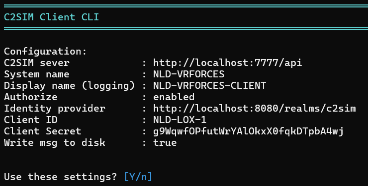
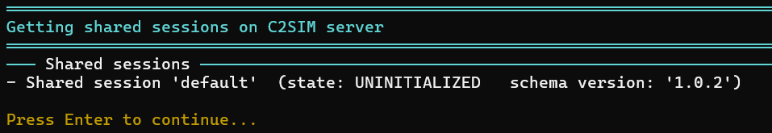
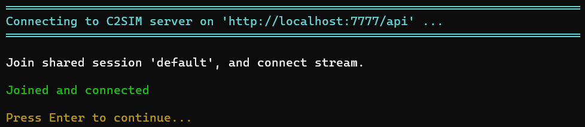
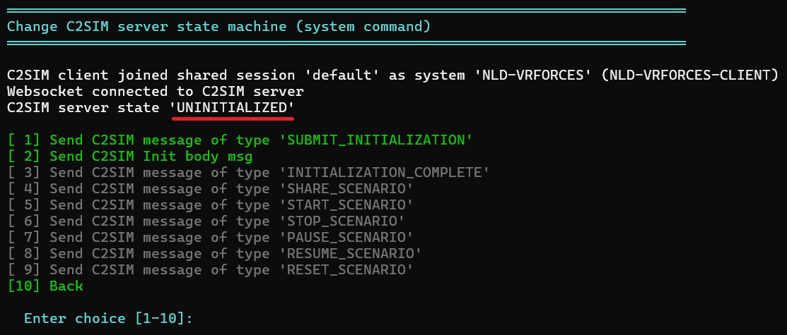
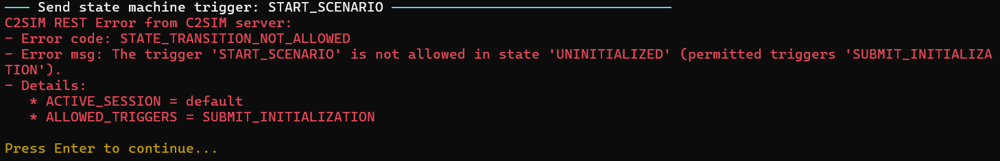
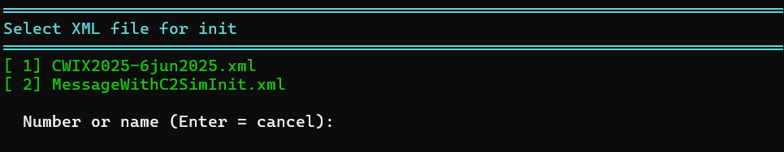
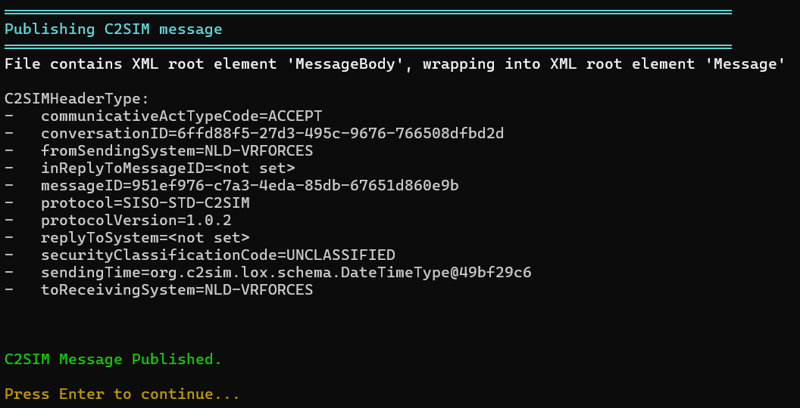
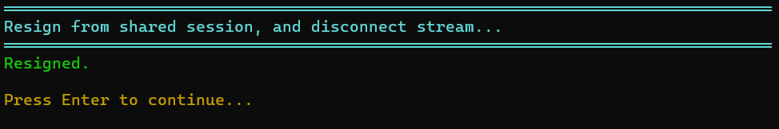
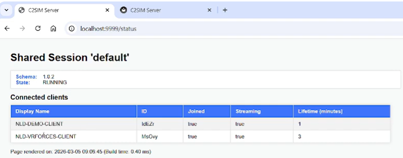

C2SIM client CLI¶
The C2SIM Client Command Line Interface (CLI) is a lightweight tool used to test and interact with a C2SIM Server.
A small demo of the tool can be found here
The CLI uses the C2SIM Client Library, which implements the Open API C2SIM Specification.
Note
The C2SIM Client CLI is intended only as a development and testing tool.
Functionality¶
The CLI supports the following features:
-
Display all active shared sessions on the C2SIM server
-
Create a shared session on the C2SIM server
-
Control the C2SIM server state machine flow
-
Establish a streaming connection (SSE) to the C2SIM server
-
Receive C2SIM messages and store them on disk
-
Send C2SIM messages from disk (with or without a C2SIM header)
-
Support OIDC authorization
-
Display detailed REST error responses
-
Validate messages using XSD schemas
-
Store and load the last-known configuration
Build and run C2SIM-CLIENT-CLI¶
Build¶
Navigate to the c2sim-client-cli directory and run:
Run¶
After building, run the application:
How to use¶
When the application starts, it checks whether a config.json file exists.
-
If the file exists, the configuration will be loaded.
-
If it does not exist, the CLI will use default hardcoded values.

Note
Menu options are displayed in green or gray:
Green → Option is valid in the current context
Gray → Option is not valid but can still be executed
Gray options are intentionally executable to allow fault behaviour testing.## Change configuration
Configuration values are displayed in cyan, indicating the current value.
Press Enter to keep the current value.
| Config item | Description |
|---|---|
| C2SIM Server url | Endpoint of the C2SIM server implementing the Open API C2SIM specification |
| System name | The system name referenced in the C2SIMInitializationBody |
| Default shared session name | Default shared session used by the CLI (can be changed later) |
| Display name | The CLI generates a unique client ID, but this value is used for human-readable identification in server logs |
| Authorize | Enables authentication (see Authorization section) |
| Write to disk | Stores received C2SIM messages on disk |
The configuration is saved in config.json and reused the next time the CLI starts.
Authorization¶
The C2SIM Client CLI supports OIDC Client Credentials Flow.
This flow is typically used for machine-to-machine authentication, but it can also support scenarios where a human is involved in the authentication process.
Note
The CLI includes a default configuration for a local Identity Provider (Keycloak).
This Keycloak instance is automatically started via Docker Compose and is preconfigured for the C2SIM server.## Show active shared sessions
Show active shared session¶
The option “Show shared sessions on C2SIM server” retrieves the list of active shared sessions.

The default shared session is always present on the C2SIM server.
Joining shared session¶
With option Change shared session name the shared session can be changed to join an other session. If the Shared Session name doesn't exist on the server, the C2SIM Client CLI will create the new shared session. The CLI will also request the streaming endpoint for the shared session and create a streaming connection (SSE).
Use option Join shared session on C2SIM server (and setup stream):

Change state machine¶
The option Change C2SIM server state machine (system command) allows the user to change the state of the C2SIM server. The required C2SIM message is generated dynamically by the CLI. This is equivalent to sending a file containing a C2SIM system command message.

If another client changes the server state, the update will be visible via the option Show Event Log.
Error handling¶
If the C2SIM server cannot process a request, it returns a HTTP 400 Bad Request response.
The CLI displays the JSON error message returned by the server.
In this example the START_SCENARIO C2SIM message is send, but the C2SIM server state is UNINITIALIZED, and this is not allowed.

Load initialization data¶
The option Send C2SIM Init body msg can be used to send the initialization file.
The initialization files can be found in the folder c2sim_messages\init (on disk).

Sending C2SIM messages¶
In the main menu the option Send C2SIM message can be used to send C2SIM messages.
The C2SIM messages can be found in the folder c2sim_messages.
Note
The C2SIM server requires the root element to be Message.
Some files may use MessageBody as the root element (without a C2SIM header). The CLI will automatically wrap these messages inside a Message root element.

Resign from shared session¶
The C2SIM Client CLI must resign from a shared session with Resign from shared session (disconnect stream). Even if the stream connection is lost, the C2SIM server keeps the session alive for the client. When the client reconnects, it can resume the session without rejoining.

C2SIM Server interface¶
The C2SIM Server page /status shows:
-
Active shared sessions
-
Connected clients
